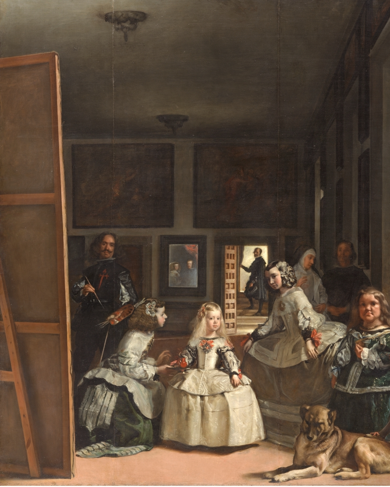
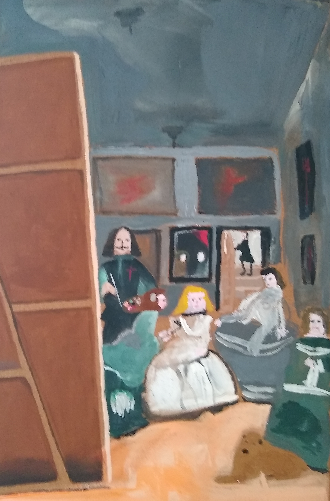

Hyper-realistic reproduction of Las Meninas
“The Cervantes text and the Menard text are verbally identical, but the second is almost infinitely richer” - Pierre Menard, Author of the Quixote (Borges)


(To clarify, the right-hand image is my one, and the left-hand one is the original.)